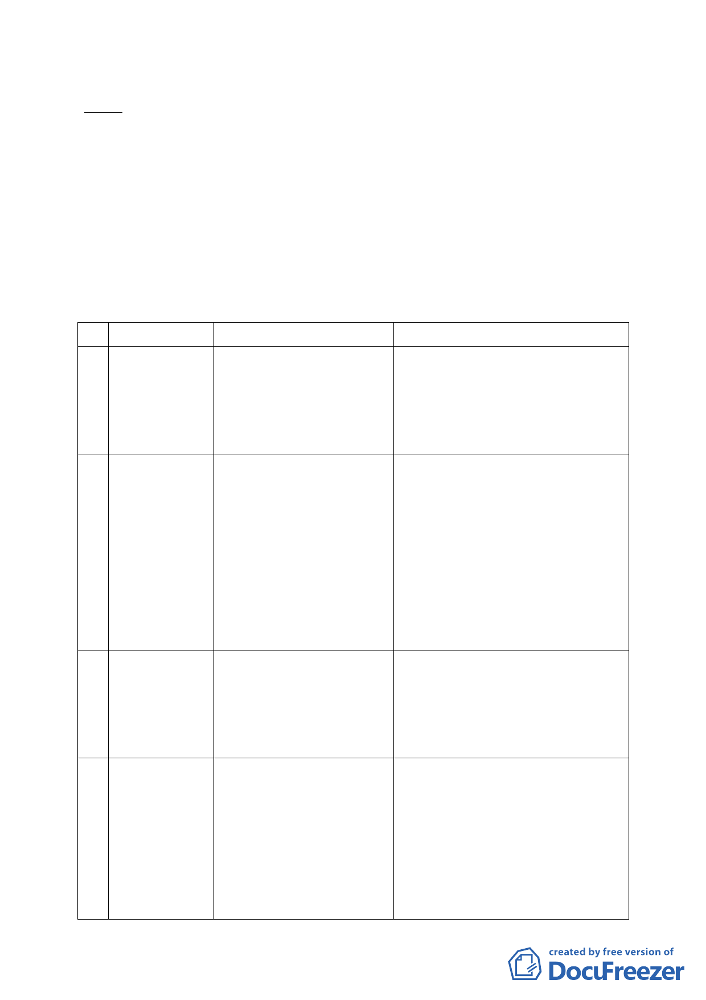

意願。
決議：目前本會計有 9 個計畫案組成專案小組審查，編號 1 案「臺
北市中華電信股份有限公司 32 處基地都市計畫通盤檢討
（主要計畫及細部計畫）案」，請脫委員宗華擔任召集人。
編號 2-9 案，由原小組成員繼續參與。另，經會後徵詢本
年度 5 位新任委員參與意願，經彙整後各專案小組委員名單
如下：
表 1 專案小組統計表
案 名召 集 人原 小 組 成 員
1 臺北市中華電 脫委員宗華
信股份有限公
辛委員晚教、張委員桂林、黃委員世
孟、王委員聲威、張委員培義
司 32 處基地都 98.1.9
市計畫通盤檢 第 590 次組成專案小組
討（主要計畫及 原召集人：邱委員大展
細部計畫）案
2 變更臺北市北 張委員桂林
投區泉源段四
小段 771 地號 99.5.25
等 7 筆土地保 第 611 次組成專案小組
辛委員晚教、魏委員國彥、李委員永
展、陳委員盈蓉、張委員培義、陳委
員春銅、劉委員小蘭、黃委員榮峰
護區及新民段
二小段 125-1
地號等 3 筆土
地住宅區為文
教區主要計畫
暨擬定細部計
畫案
3 臺北市士林區 黃委員世孟
都市計畫通盤
張委員桂林、辛委員晚教、李委員永
展、黃委員台生、黃委員志弘、陳委
檢討（主要計 100.8.25
員盈蓉、王委員聲威、吳委員盛忠、
畫）案
第 627 次組成專案小組
陳委員春銅
4 配合臺北市捷 黃委員台生
運萬大-中和-
樹林線工程變 101.1.19
更沿線土地為 第 632 次組成專案小組
交通用地及土
地開發區（捷）
主要計畫及擬
定暨劃定都市
更新地區細部
-3-
張委員桂林、辛委員晚教、李委員永
展、黃委員志弘、王委員聲威
、陳委員盈蓉、張委員培義、劉委員
小蘭